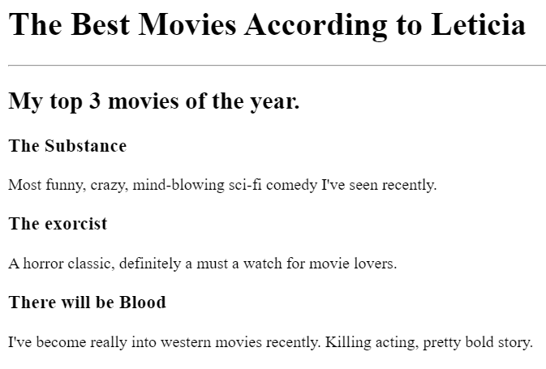

Leticia Almeida's Portfolio
I'm a Web developer

Movie Ranking Project
See the web page with a ranking of 3 of my favorite movies in the year
Birthday Invite
See the web page with a ranking of 3 of my favorite movies in the year
About me
Drop me a line